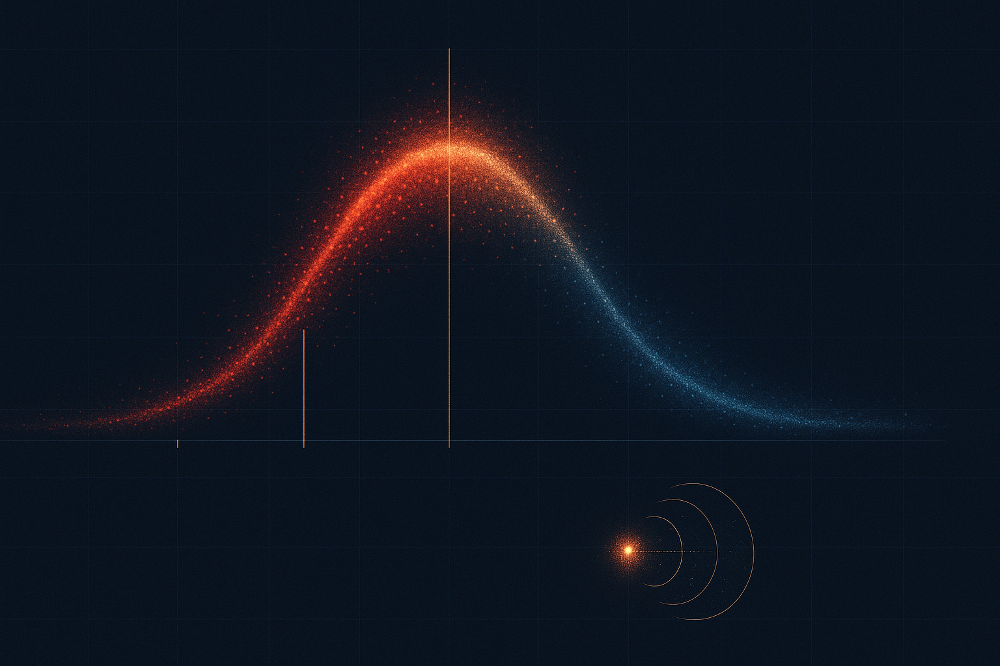
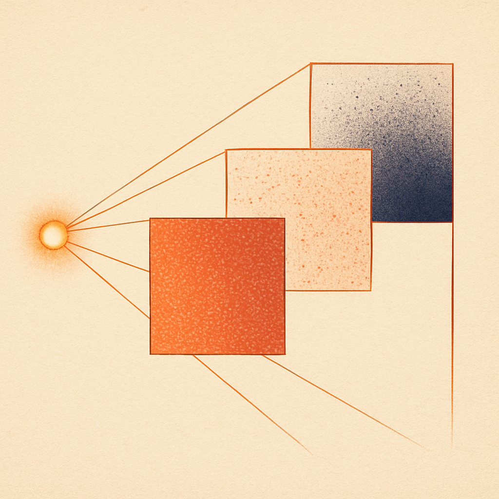
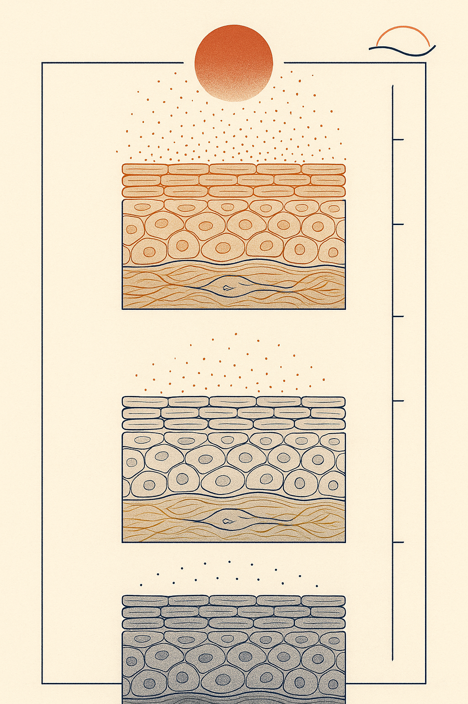

Review below. Reply approve to publish the Facebook post, or tell me edits.

If ten minutes helps, twenty should help twice as much. It does not.
It is a completely reasonable instinct. It is also wrong, and not in the convenient way brands usually mean when they tell you to use less of something. Light does not behave like sunscreen, where more coverage means more protection. It behaves more like caffeine: a useful window, then diminishing returns, then a point where you are just tired and jittery and no better off.
Here is how dose actually works, why distance matters more than duration, and what we can and cannot tell you about our own device.
> The four rules, up front. > > 1. Keep sessions to the ten minutes the device is set to. > 2. Consistency beats intensity. > 3. Contact or near-contact beats distance. > 4. Do not double up. > > Distance costs you more than duration.
One line, and it explains most of the confusion.
Dose is irradiance multiplied by time. Irradiance is how much light actually lands on a patch of skin, measured in milliwatts per square centimetre. Time is how long it lands there. Multiply the two and you get energy delivered, usually expressed in joules per square centimetre.
Which means time is only half the equation. Asking "how long should I use a red light therapy mask" without knowing the irradiance is like asking how long to leave a kettle on without knowing whether it is plugged in. The number on its own tells you very little.
That is why the honest first question is not "how long", it is "how much light is reaching my skin, and from how far away".
The technical term is the biphasic dose-response. Translated: there is a sweet spot. This is not our idea. It is the pattern set out in Huang and colleagues' widely cited review of the biphasic dose response in low-level light therapy, and it has been repeated across the photobiomodulation literature since.
Too little light and the mitochondria in your skin cells are barely nudged. Nothing much happens. In the middle band you get the useful response, the one that literature actually describes. Push past that band and the benefit plateaus, and in laboratory settings the effect can drop back toward nothing, sometimes below where it started.
Think of watering a plant. Underwater it and it wilts. Water it properly and it thrives. Keep pouring and you drown the roots. Or think of your second coffee, which reliably does less for you than the first one did.
An important caveat, because we would rather say it than have you find it out elsewhere. The biphasic curve is well described in the research, but the exact position of that sweet spot is still imprecise for at-home devices used on real human faces. Most of the tidy numbers come from cell cultures and animal models. So we treat the curve as a reason for restraint, not as a precise prescription. It is a good argument against doubling up. It is not a licence for anyone to hand you an exact joule count and call it science.
This is the practical half, and it is the part most people underestimate.
Light from a source spreads out as it travels. Double the distance and the light landing on a given patch of skin drops to roughly a quarter. That is the inverse-square law, and it is not a gentle taper, it is a cliff.
So a panel sitting two metres away across the bedroom is not "the same session, just slower". The dose reaching your face is a small fraction of what the same panel delivers at arm's length, and no amount of extra minutes reliably makes that up, because you may have dropped below the threshold where anything useful happens at all.
A contact mask sidesteps that problem. Silicone sitting on the skin, the light source essentially touching the target. Distance mostly stops being a variable you can get wrong.
That is the honest structural advantage of a mask format. It is not a claim that a consumer mask outperforms a clinical system. It is simply that the geometry is fixed, so your session is repeatable, and repeatable is what a maintenance habit needs.
For the record, the spec on ours: seven LED colours, 70 chips across the face panel and 33 across the neck, 309 emission points in total, ten minutes a session, USB-C charging.
We do not publish a measured irradiance figure for the current unit. So we are not going to hand you a joules-per-session number, because we would be making it up.
While we are here: if anyone quotes you an exact dose for a consumer LED mask without stating the measurement conditions (distance, wavelength, the meter used), they are guessing too. An irradiance figure with no conditions attached is a marketing number, not a measurement.
We are commissioning measured per-wavelength numbers for our next unit, and we will publish them, including the unflattering ones. Redermis is new. We do not have a wall of reviews yet, and we are not going to invent any, or invent a spec sheet either.
Keep sessions to the ten minutes the device is set to. Do not stack two back to back hoping to speed things up. That is the exact instinct the biphasic curve argues against.
Consistency beats intensity. Daily-ish use over eight weeks does more than an occasional long session. Skin turnover runs on weeks, not on single sittings.
Contact or near-contact beats distance. If you are using a panel, get closer rather than staying longer. If you want a refresher on which wavelength does what and why proximity matters differently for each, we covered that in our guide to red, blue and green LED wavelengths.
Do not double up. If you use a mask and a panel, do not run both on the same area on the same day. You are not accelerating anything, you are just guessing at a dose you cannot measure.
Closer is better than further, yes. But "faster" is the wrong word for what it buys you.
Sitting closer raises the irradiance, so more of the light actually lands on your skin instead of spreading out into the room. That is what gets a session into the useful band at all. It is why a mask sitting on the skin does not need a long timer, and why a panel across the bedroom cannot buy its way back with extra minutes.
What proximity does not do is compress the calendar. Skin turnover, collagen support, visibly more even tone: those run on weeks either way. Closer means your ten minutes counts for something. It does not mean two weeks of sessions will do eight weeks of work.
This is a maintenance habit, closer to flossing than to a procedure. Nobody flosses for forty minutes on a Sunday to make up for the week.
Ten minutes. Most days. Light on the skin, not across the room. Then get on with your evening and let the weeks do the work.
If you ever want a closer look, the mask and the full spec are here.
Redermis is a cosmetic device, not a medical one, and none of the above is medical advice.

Ten minutes feels too short. That is usually the first thing people think, and it is the misread that costs people the most.
Here is the bit almost nobody is told. Step twice as far from a lamp and the light landing on your face is not half. It is roughly a quarter.
2x distance is roughly a quarter of the light.
Which is why "I will just sit further back for longer" does not balance the books. A panel across the room is not the same dose, slower. It is a much smaller dose.
The other half: light has a useful band. Past it, more does not keep adding. More is not better, it is just more.
An honest note. We do not publish a measured irradiance figure for the current mask, and we are not going to invent one. Anyone quoting an exact joule count for a consumer device without stating distance and measuring conditions is guessing. We are new and still earning our reviews, and we will not fabricate any.
What we can say plainly: 309 emission points across face and neck, sitting on the skin, ten minutes. Cosmetic device, not medicine.
Practical rule: do not stack two sessions to catch up on a missed day. Consistency beats catch-up.
If you ever want a closer look at the spec, it is here: https://redermis.com.au/products/red-light-therapy-face-neck-mask
How far from your lamp do you actually sit?
#redlighttherapy #skinlongevity #skincarescience #ledmask
IMAGE PROMPT: Editorial science illustration in the style of Scientific American or Quanta Magazine: a single warm glowing point source at the left edge, its light spreading rightward along one clean receding sightline through three square frames that are identical in size and evenly spaced at increasing distance. The same field of discrete fine particles appears inside all three frames at roughly 100, 25 and 6 percent density, visibly thinning and spreading wider across each successive frame, always discrete particles and never a flat solid fill. All three frames rendered in the SAME warm red hue, with only brightness falling away, no shift to cool or navy tones. Clean thin line work, precise geometric construction, muted ivory paper ground, soft grain, no stray rules or lines running off the canvas edges. Structured, legible, diagrammatic. No labels, no numerals, no text, no logos, no arrows, no product, no device, no mask, no technology, no people, no faces.

Twice the distance is roughly a quarter of the light. Not half.
That one fact undoes most of what people assume about at-home light therapy.
Dose is intensity multiplied by time, and time is the half everyone fixates on. So a panel across the room is not the same session, slower. It is a different dose entirely. A device sitting on the skin, 309 emission points across face and neck, simply removes that variable.
The other half: light has a useful band. Inside it, cells respond. Past it, the curve flattens or falls back. Or think of your second coffee, which does noticeably less than the first.
The limit, said before any benefit. We do not publish a measured irradiance figure for this unit, and we are not going to invent one. Redermis is new. We are still earning our reviews.
Ten minutes. Most days. Cosmetic device, not medicine. Full spec is in the bio if you want a closer look.
How far away do you sit from your panel? Tell me below.
#redlighttherapy #ledmask #skinlongevity #skincarescience #photobiomodulation #redlighttherapyathome #australianskincare #photobiomodulationresearch
IMAGE PROMPT: Vertical editorial science illustration in the style of Scientific American or Quanta Magazine. Three stacked horizontal registers of stylised skin cross-section, all three complete and uncropped with even margins top and bottom, each register showing its full layered strata including the dermis. The same field of fine luminous particles appears in every register: the top register dense, warm and richly saturated red; the middle sparser and dimmer; the bottom sparsest, rendered in dull terracotta and taupe rather than neutral grey. Each register is separated by one crisp hairline rule spanning the full width. At the top, a diffuse warm source glow spreading softly into the frame, not a hard-edged solid disc. A single clean falloff arc curves from the source down through the registers, properly anchored at both ends. A fine tick rule along the right edge aligned exactly to the three register baselines. Deep navy ground, high contrast, precise draughtsmanship, clean vector-like rendering with soft luminous bloom on the brightest particles. The density difference must read instantly even at thumbnail size. No stray doodles or unanchored marks. No numerals, no labels, no text, no logos, no product, no mask, no device, no technology, no people, no faces.
**Title:** Red Light Therapy At Home: Why 20 Minutes Is Not Better Than 10
**Description:** A panel across the room delivers a fraction of the dose, not the same dose slower. If you are wondering why your red light therapy at home results are slow, distance is usually the reason, not session length.
Dose is intensity multiplied by time. Light follows the inverse-square law, so twice the distance is roughly a quarter of the light. And the response is biphasic: there is a useful band, past which benefit flattens rather than climbs. More is not more.
Four rules: 1. Ten minutes, the length the device is set to. 2. Consistency beats intensity. 3. Contact or near-contact beats distance. 4. Do not double up.
An honest note. We do not publish a measured irradiance figure for our current unit, and we are not going to invent one. That is exactly why we say ten minutes a day and leave it there. A mask sits against the skin, which is why short sessions are enough. Redermis is a cosmetic device, not medicine.
**Link:** https://redermis.com.au/products/red-light-therapy-face-neck-mask
**Hashtags:** #RedLightTherapy #LEDFaceMask #SkincareScience #AtHomeSkincare #SkinLongevity
Note: this pin reuses the Instagram image (no separate image is generated for Pinterest).